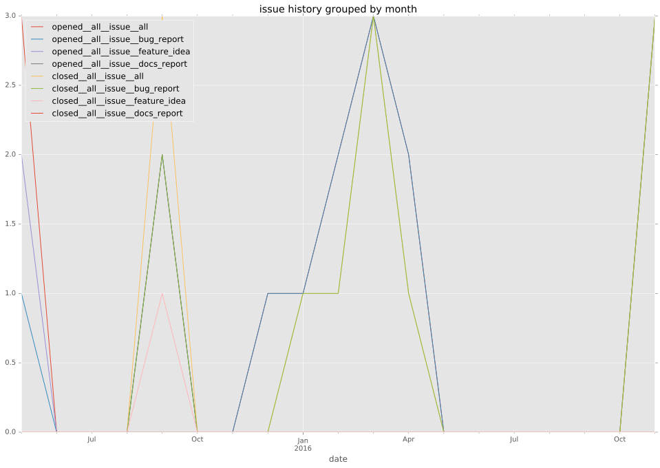
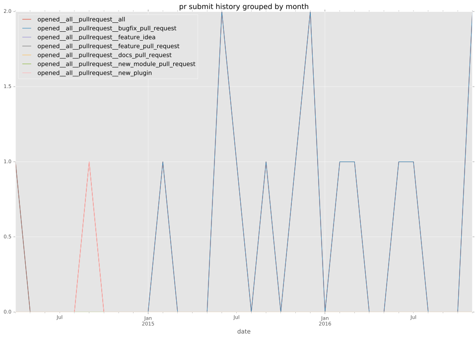
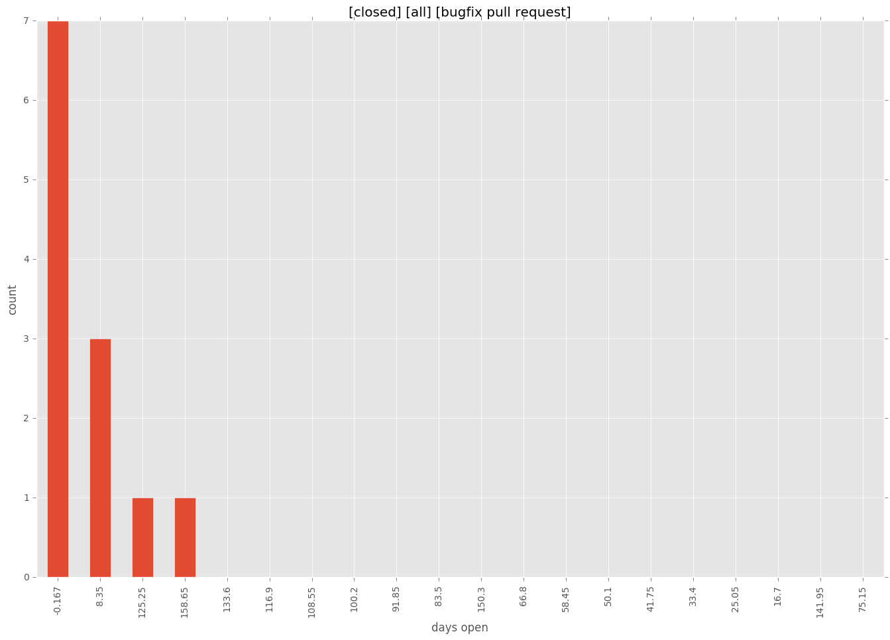

authors
maintainers
- ravibhure
contributors
- autotune : 4 commits
- JamesBarwell : 1 commits
- bcoca : 6 commits
- ravibhure : 59 commits
- ggermis : 16 commits
- geerlingguy : 22 commits
- psykotox : 1 commits
total issue counts
bugfix pull request: 13
pullrequest: 16
feature pull request: 2
feature idea: 2
issue: 13
new plugin: 1
bug report: 11
issue history

pullrequest history

days open by issue type
feature pull request
count: 3
std: 55.4256258422
min: 78
max: 174
median: 78.0
mean: 110.0
all
count: 34
std: 54.8890389364
min: 0
max: 174
median: 7.0
mean: 35.7352941176
pullrequest
count: 0
std: nan
min: nan
max: nan
median: nan
mean: nan
bugfix pull request
count: 21
std: 54.2301971757
min: 0
max: 167
median: 3.0
mean: 26.2857142857
feature idea
count: 1
std: nan
min: 123
max: 123
median: 123.0
mean: 123.0
issue
count: 0
std: nan
min: nan
max: nan
median: nan
mean: nan
new plugin
count: 2
std: 0.0
min: 70
max: 70
median: 70.0
mean: 70.0
bug report
count: 7
std: 15.4919333848
min: 1
max: 43
median: 4.0
mean: 10.0
closures grouped by total days open
